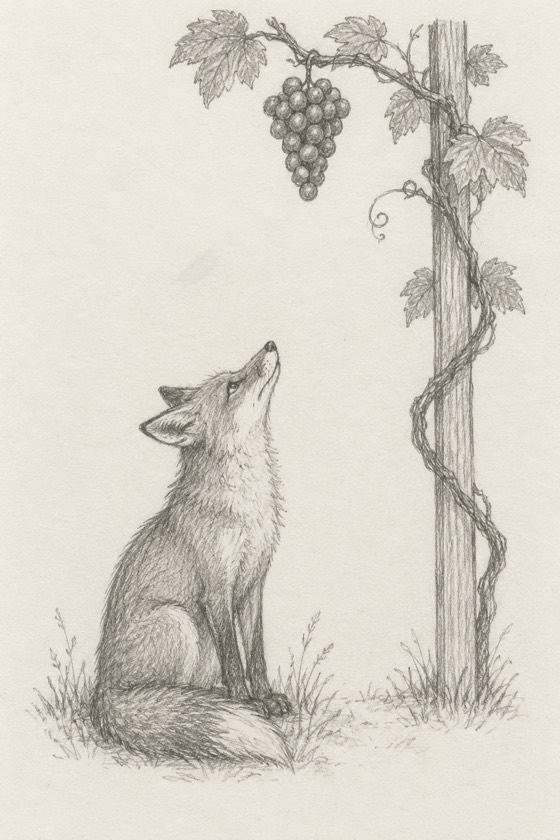

|
“I’m so over him.”
Most of us have said it. Usually a little too loudly. Usually more than once.
There’s a fox who said much the same thing.
One hot summer day, a hungry fox spotted a bunch of grapes. They were dark and ripe, and they hung high up on a vine.
He took a run and a jump. Missed.
So he turned around, counted himself in, one, two, three… and jumped again. Missed again.
Again and again he jumped. The grapes stayed right where they were.
At last he gave up. He walked away with his nose in the air, saying:
“I am sure they are sour.”
They weren’t. One old Greek poem says so plainly. Those grapes were ripe.
This is one of Aesop’s fables. It’s where we get the saying “sour grapes.”
Moral of the story: it’s easy to look down on what you can’t reach.

The fable ends there. I don’t think the wanting did.
An English version from 1867 makes the fox a she. And she walks off “hiding her disappointment.”
We do this in love. I’ve done it too. “I didn’t want him anyway.” “I’m better off.” “I’m done with all that.”
But calling him sour doesn’t stop the wanting. It only hides it.
Sometimes “I’m over him” is simply true. Sometimes it’s a nose in the air.
So here are three yes-or-no questions. Nobody’s watching.
Did you try for him more than once? The fox jumped again and again. Nobody jumps like that for grapes they don’t want.
When his name comes up, do you act extra fine? The fox didn’t just walk away. He walked away with his nose in the air.
Do you say you’re over him before anyone asks? Nobody asked the fox. He said it anyway.
No one right now? Read them again, and put “love” where it says “him.”
Even one yes, and the wanting may still be there. That’s nothing to be ashamed of.
Do you still want him?
Evelyn, I’m ready to be honest about what I feel →
Yes is a fine answer here. So is no. So is “I honestly don’t know.” Tell me about him. Or tell me you’re done with love, and what made you say so.
If you’ve been saying “I’m fine” for a while, that makes sense. It’s how a lot of us get through the day with our chin up.
And if part of you still wants him, that isn’t silly. It doesn’t mean you learned nothing. It means he mattered.
You don’t have to keep the chin up with me.
Haven’t talked with me yet? Your first 3 minutes are free.
The fox walked off just as hungry as he came. “Sour” never fed anybody.
Talk to Evelyn — no sour grapes →
— Evelyn
P.S. Those grapes were ripe the whole time. The fox just couldn’t say so. If you can, even in a whisper, I’d like to hear it. Start here.
|